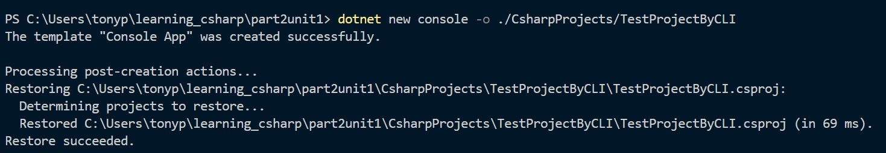
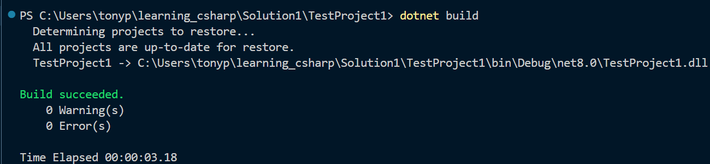
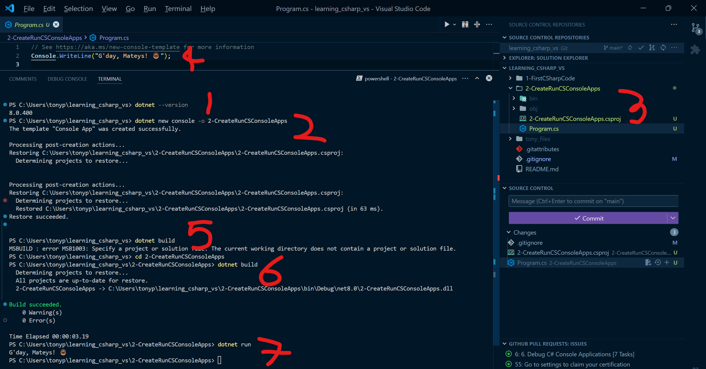
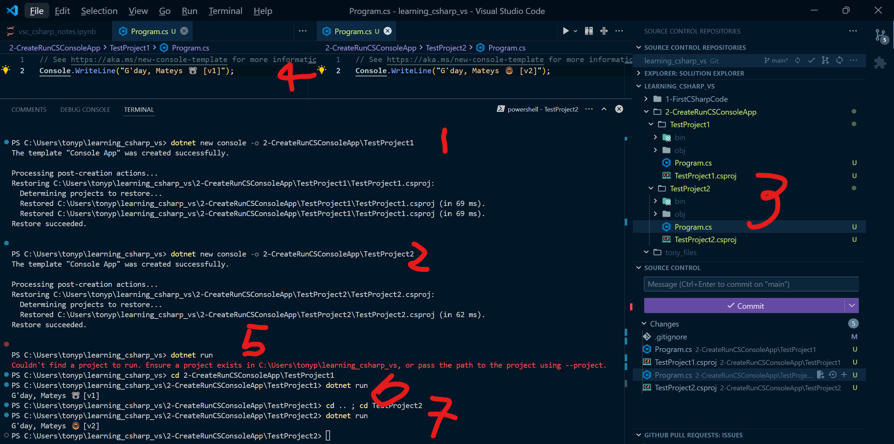
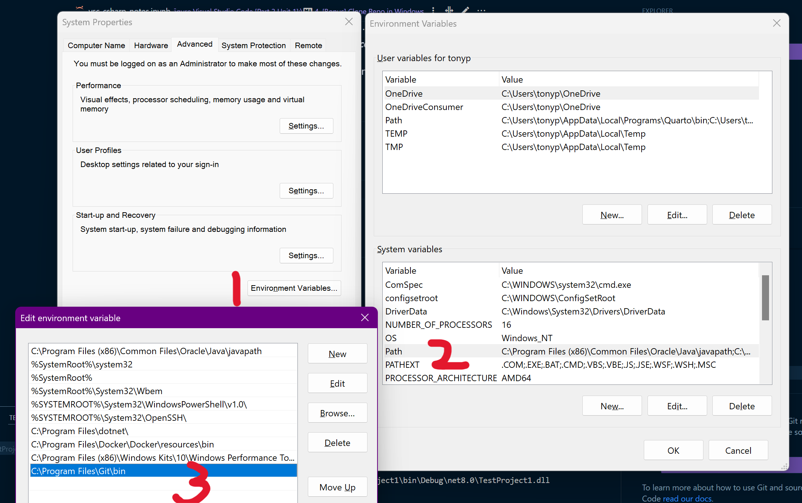

1. Introduction
Visual Studio Code supports the development of C# applications using:
C#language extensions and- the
.NETSoftware Development Kit (SDK).
2. .NET Platform and Visual Studio Code Extensions
.NET is a an open-source developer platform to develop applications (in C#, F#, or Visual Basic). - It is used to develop & run applications cross-platform (for Windows, macOS, and Linux) - It includes software languages and code libraries. - The .NET platform provides a runtime environment for running applications.
2.1 .NET Runtime Explained
The .NET runtime is the: - code library - required to run your C# applications - also known as Common Language Runtime, or CLR.
The `.NET` runtime isn't required to write your `C#` code, but it's required to actually run your `C#` applications.2.2 Visual Studio Code Extensions
Visual Studio Code provides a development environment for:
- writing,
- running, and
- debugging
C#applications
By using Visual Studio Extenions:
.NETSDKC#extensions
2.3 Install Extensions
2.3.1 [C# Dev Kit - Official C#]
This extensions helps to develop, edit, and debug C# code in Visual Studio Code. It also installs:
- [.NET Install Tool]: This extension installs & manages different versions of:
.NET SDKRuntime.
- [C#]: Base language support for
C#. - [C# Dev Kit]: Official
C#extension from Microsoft.
2.3.2 [IntelliCode for C# Dev Kit]
This extension provides AI-assisted development for the C# Dev Kit.
2.3.3 .NET SDK
This is required to run and debug C# applications. - Check if already install: dotnet --version - If not installed: - type .NET: Install and then - select .NET: Install New .NET SDK. - Under Latest, select .NET 8, select Install.
3. Create, build, and run your application
The [.NET software development kit (SDK)] includes a - command-line interface (CLI) VSC’s Terminal. - .NET CLI commands can: - create new console applications, - build project code, and - run applications.
3.1 .NET CLI
Sample .NET CLI command Code below will create new console app in specified folder.
dotnet new console -o ./CsharpProjects/TestProject
3.2 .NET CLI Command Structure
There are 3 parts: [driver] [command] [command arguments]:
- The driver:
dotnet
- The command:
new console
- The command arguments:
-o ./CsharpProjects/TestProjectByCLI
command arguments are optional, so dotnet new console creates a new console app in the current working directory.

3.3 C# Console Application Template
Program.cs: Source Code ? (TBA)
TestProject1.csproj: Project File
obj: Build files and dependencies like .dlls (TBA)
4. Update, Build, and Run Application
The dotnet build command:
- builds the project and
- builds its dependencies
- into a set of binaries.
The binaries include the:
- project’s code in
Intermediate Language (IL)files with a.dll extension. - Location:
.\bin\Debug\net7.0\
4.1 Build Application
- Navigate to
TestProject(Ctrl + q: Folders) Shift + F10Open in Terminaldotnet build

4.2 Run Application
The dotnet run command:
- runs source code without any explicit compile or launch commands.
- A convenient option to run application from the source code
- Useful for fast iterative development from CLI.
- The command depends on the dotnet build command to build the code.
Code: dotnet run
5. Create, Build and Run a Test Project (in one screenshot)
5.1 Old/Bad (Version 1)
- Check dotnet (exists):
dotnet --version - Create console app with dotnet cli command:
dotnet new console -o 2-CreateRunCSConsoleApps - Check app has been created… [Realised I made a mistake]
Should have created a extra folder within the top folder, that is: 2-CreateRunCSConsoleApps\SimpleApp
I’ll leave screenshot below and also provide update.

5.2 Better/Updated (Version 2)
Current Project Structure:
2-CreateRunCSConsoleApps\Program.cs:- Only one project per solution, an undesirable structure.
Program.csis directly under the Solution Name.- Preferred to be able to have multiple projects within a single Solution (see next section).
New Project Structure:
2-CreateRunCSConsoleApps\TestProjectNo\Program.cs:- Allows for multiple projects within single Solution. Example:
- [Project 1]:
2-CreateRunCSConsoleApps\TestProject1\Program.cs - [Project 2]:
2-CreateRunCSConsoleApps\TestProject2\Program.cs
- [Project 1]:
- Allows for multiple projects within single Solution. Example:
5.3 Create, Build Run: Version 2 Steps
- Create TestProject1:
dotnet new console -o 2-CreateRunCSConsoleApp\TestProject1. - Create TestProject2: See 2.
- Check projects created succesfully.
- Update Program.cs scripts and save.
- Build.. [Realised I didnt build it first, but still works??]: No issues (see 4.3.1
dotnet runnotes). - Build TestProject1: Go to TestProject 1 directly then:
dotnet build, thendotnet run. - Build TestProject2: see 6.
Output for both projects are as expected.

5.3.1 dotnet run notes
Turns out dotnet run also runs dotnet build. GPT output:
Separate Build and Run Steps: In scenarios like continuous integration (CI) pipelines or deployment scripts, you often want to explicitly build the project first (dotnet build) and then run or test it separately. This allows for better error handling and control over each step.
Build Output for Distribution: dotnet build creates the build artifacts (compiled .dll files and dependencies) without running the project. If you’re distributing your code or creating deployment packages, you’ll want the output from dotnet build, not the temporary output that dotnet run uses.
Faster Subsequent Runs: Running dotnet build first creates a compiled version that dotnet run will use as long as there are no code changes. This can make dotnet run faster on subsequent runs.
Debugging and Optimization: dotnet build allows for setting specific build configurations, like Release or Debug, without running the program. This is useful for testing different build configurations or optimizing the final build before deployment.
6. [Bonus] Clone Repo in Windows
Terminal: git@github.com:tonyjustdevs/learning_csharp_vs.git
If git is not recognised: Add git bin as environment variable.
